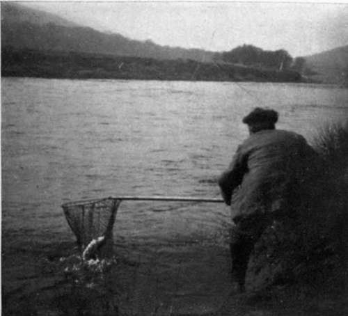
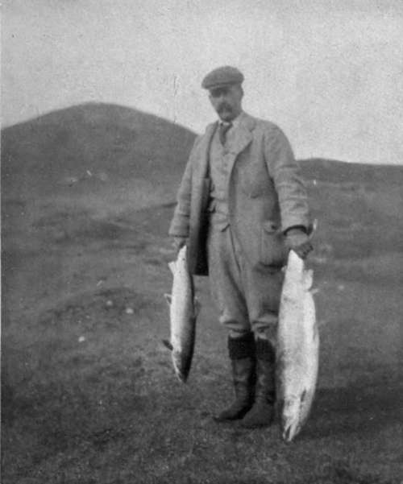

Storage And Passes. Part 2
Description
This section is from the book "Salmon Fishing", by W. Earl Hodgson. Also available from Amazon: Salmon Fishing.
Storage And Passes. Part 2
The prospective success of the experiment on the Thurso is more than hypothetical. What is being done there, as has been indicated, is not a groping in the dark.
The Helmsdale, in the northern part of Sutherland, rises at Badanloch and falls into the sea at the village which bears its name. It is "good water" throughout practically its whole twenty miles, ten of which are above Kildonan Falls and ten below. On the Helmsdale the storage system is already established. Mr. J. B. Taylor, Sherfield Manor, Basingstoke, who took a share in the improvement, has kindly stated particulars, from which it will be perceived that the system is astonishingly successful.
We begin with a general account of the interesting river, The right of angling belongs to the sporting tenants of Badanloch, Auchintoul, Borrobol, Suisgill, Kildonan, and Torrish. The proprietors of the lodges there having formed themselves into a body, the river is fished under rules and regulations drawn up by them. It is divided into twelve beats, six of which are below the Falls and six above. These are fished by the tenants in rotation.
In 1899 the angling tenants found that the bag nets on the east coast of Sutherland were seriously reducing the stock of fish and threatened to ruin the Helmsdale as an angling river. They resolved to buy off the nets on the east coast and to lease the river-mouth nets from the Duke of Sutherland. They made an agreement accordingly. The right to net the river has not since been exercised, and there is abundant evidence that the stock of fish has steadily increased. In order to indicate the damage which bag nets are capable of doing to small rivers like the Helmsdale and the Brora, Mr. Taylor collected statistics from the Annual Report of the Fishery Board of Scotland for 1897 :-
The Helmsdale-
Salmon taken by net and coble | 351 |
Grilse „ „ „ | 469 |
Sea-trout „ „ „ | 72 |
The Brora-
Salmon taken by net and coble | 871 |
Grilse „ „ „ | 238 |
The Fleet-
Salmon taken by net and coble . 20
Taken by fixed engines (bag nets) on the east coast of Sutherland-
Salmon ..... | 2709 |
Grilse ..... | 4779 |
Sea-trout ..... | 627 |
Total taken by coast and river nets-
Salmon ...... | 3951 |
Grilse ...... | 5486 |
Total . | 9437 |
Total salmon and grilse taken by rods-
The Helmsdale .... | 507 |
The Brora .... | 300 |
It will be seen that the salmon and grilse taken by rod and line in 1897 on the two rivers numbered 807, and that 9437 were taken by the nets. The proportion is 1 to 12. It is apparent from the statistics since 1807 that unrestricted netting on the coast cannot be carried on without seriously injuring a river so small as the Helmsdale. The number of fish taken by coast nets is more than double the average total take of fish for the fifteen years from 1882 to 1896. It is true that in particularly good years the nets on the Helmsdale took as many as 11,000 salmon and grilse; but that was quite exceptional, and it is probable that many of the pools in the river were netted at that time. The best netting seasons of which there are records were as follow:-
Year 1807, | 57,805 lbs. taken; average | 7.06 lbs. |
„ 1816, | 68,250 „ „ „ | 6.13 „ |
„ 1883, | 32,373 „ „ „ | 8.17 „ |
„ 1895, | 34,401 „ „ „ | 8.34 „ |
Although there are records of poor seasons, the average was pretty good. We find that between 1882 and 1896 the nets on the river took on an average 3187 salmon and grilse each year. The worst seasons on record were as follow:-
Year 1839, | 6139 lbs. taken; | average 6.55 lbs. |
„ 1847, | 7490 „ „ | „ 6.31 „ |
„ 1879, | 3948 „ „ | „ |
„ 1897, | 6317 „ „ | „ 8.24 „ |
„ 1898, | 2830 „ „ | " 7.98 „ |
„ 1899, | 2166 „ „ | „ 7.80 „ |
It is instructive to note that whilst the rod-fishing yielded 1739 salmon and grilse, averaging 9.34 lbs., in 1895, only 307 fish, averaging 9.09 lbs., were taken in 1899, two years after the coast nets had been at work; and that the number of fish caught by rod and line in 1905 was 1330. The average weight of the Helmsdale fish is 10½ lbs.; that of grilse, 4½ lbs.; that of sea-trout, 1½ lbs. It is difficult to prove the size of the largest fish known to have been taken. Within recent years there have been several of from 30 to 35 lbs. The annual close time for netting is from August 27 to February 10; the annual close time for angling from October 1 to January 10.
Now we come to the main point.
When the angling tenants decided to take off all the nets they were faced with a problem. How were they to deal with the fish with which the river would be stocked ? As long as there was sufficient water to enable the fish to get up to the large lochs from which the river rises there would be no danger. The lochs were of such size that they could not easily be over-stocked; but it was well known that after April the river dwindled in dry seasons. The water became so low that the fish could not ascend any considerable distance, and it was impossible for them to reach the lochs. What was to be done ? It was decided to build a dam capable of storing sufficient water during the summer, and, by regulating the supply, to keep the river in order and enable the fish to reach the lochs. The dam was thrown across the outlet of Loch Badanloch. For two years there was no definite result; but that was for reasons unconnected with the dam itself. Litigation had been threatened, and the dam could not be used. Within these few years, however, the dam has been carefully worked at its fullest capacity, and has been a complete success. The angling tenants built a second dam at Loch An Ruathair, and in 1905 enlarged the Badanloch dam by raising the wall 2 feet; these measures increased the storage capacity about 50 per cent. The Badanloch dam covers 2000 acres. The water level was raised 6 feet, and the quantity stored is 3,300,000,000 gallons. The Loch An Ruathair dam is about 500 acres in extent. The water level has been raised 4 feet, and the storage is 600,000,000 gallons. The cost of Badanloch dam was £700; that of Loch An Ruathair dam, £450.
1. Salzcraggie Pool, In The Helmsdale.
Continue to:
Tags
salmon, fish, river, fishing, trout, loch, flies, fishing flies